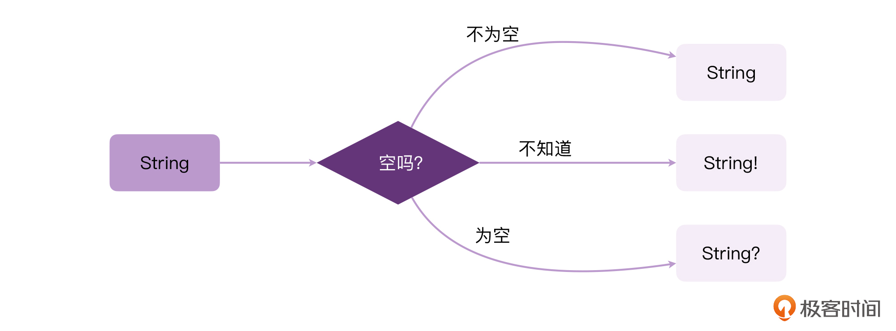
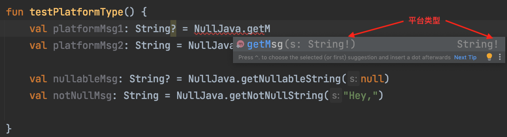
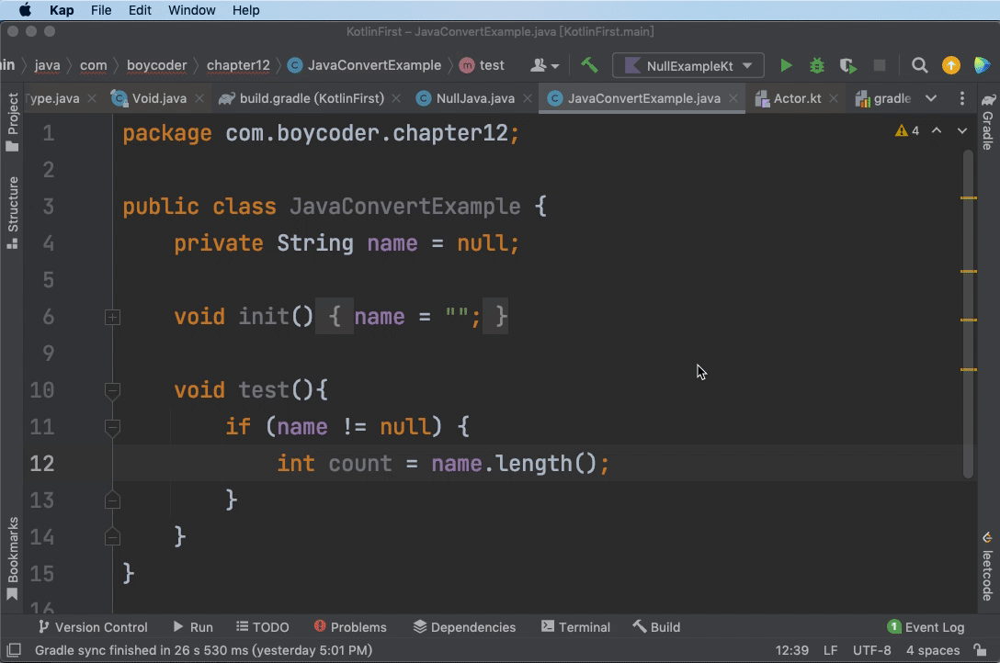
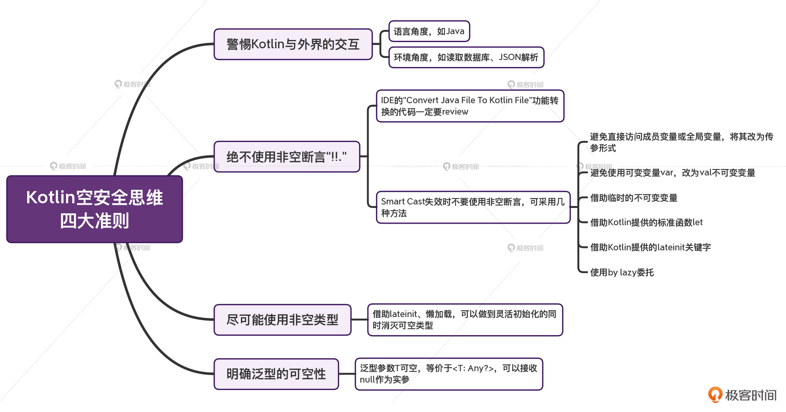

Audio加餐四丨什么是“空安全思维”？
你好，我是朱涛。这节加餐，我们来聊聊空安全思维。
空（null），是很多编程语言中都有的设计，不同的语言中名字也都不太一样，比如 Java 和 Kotlin 里叫 null，在 Swift 里叫做 nil，而 Objective-C 当中，根据情况的不同还细分了 NULL、nil、Nil 等等。
如果你有 Java 的经验，那你一定不会对 NullPointerException（NPE，代码中常见的逻辑错误）感到陌生。null 会引起 NPE，但是在很多场景下，你却不得不使用它。因为 null 用起来实在是太方便了。比如说，前面第 4 讲里，我提到的计算器程序当中的 calculate() 方法，它的返回值就是可为空的，当我们的输入不合法的时候，calculate() 就会返回 null。
一般来说，我们会习惯性地用 null 来解决以下这些场景的问题：
当变量还没初始化的时候，用 null 赋值；
当变量的值不合法的时候，用 null 赋值；
当变量的值计算错误的时候，用 null 赋值。
虽然这些场景，我们不借助 null 也可以漂亮地解决，但 null 其实才是最方便的解决方案。因为总的来说，null 代表了一切不正常的值。如果没有了 null，我们编程的时候将会面临很多困难。
所以，null 对于我们开发者来说，是一把双刃剑，我们既需要借助它提供的便利，还需要避开它引出的问题。这是一种取舍，我们要在 null 的利与弊当中找到一个平衡点。而且，这里的平衡点，在不同的场景中是不一样的。
那么，怎么才能把握好 null 的平衡点呢？这就体现出空安全思维的重要性了。
Java 的空安全思维
在正式研究 Kotlin 的空安全思维之前，我们先来看看 Java 是否能给我们带来一些灵感。
另外一种手段是 @Nullable、@NotNull 之类的注解，开发者可以使用这样的注解来告诉 IDE 哪些变量是可能为空的，哪些是不可能为空的，IDE 会借助这些注解信息来帮我们规避 NPE。
不过，注解这样的方式，实际效果并不好，主要有两个原因：一方面是注解很难在代码中大面积使用，这全依赖于开发者的习惯，很难在大型团队中推行，即使推行了也会影响开发效率；另一方面，即使在工程当中大面积推行可空注解，也无法完全解决 NPE 的问题。
想象一下，虽然我们可以在函数的参数以及返回值上面都标注可空性，但无法为每一个变量、每一种类型，都标注这些可空信息。因此，可空注解这样的方式，必然是会留下很多死角的。
还有一种手段，是 Java 1.8 当中引入的 Optional，这种手段的核心思路就是封装数据，不再直接使用 null。举个例子，从前我们直接使用 String 类，使用 Optional 以后，我们就得改成 Optional。如果我们要判断值是否为空，就用 optional.isPresent()。
但 Optional 有几个缺点：
第一点，增加了代码的复杂度；
第二点，降低了代码的执行效率，Optional 的效率肯定比 String 更低；
最后，业界普及度不高。这其实也是由前面两者而决定的，即使我们在自己的工程中用了 Optional，而第三方 SDK 当中没有的话，它也很难与其交互。
由此可见，Java 解决 NPE 的三种思路都无法令人满意。
那么，现在假设你自己就是 Kotlin 语言的设计者，在 Java 的三种思路的基础上，你能想到什么更好的思路吗？
前面我们曾提到了，使用 @NotNull 之类的注解，是存在死角的，因为我们无法为每一个变量、每一个类型都加上可空注解。一方面是注解的 Target 存在限制，另一方面是开发效率也会急剧下降。
所以，我们需要的其实是一种简洁，且能为每一种类型都标明可空性的方式。这样一来，我们自然而然就能想到一个更好的方案，那就是：从类型系统下手。
Kotlin 的空安全思维
Kotlin 虽然是与 Java 兼容的，但是它的类型系统与 Java 却有很大的不同。在 Java 当中，我们用 String 代表字符串类型。而在 Kotlin 当中，同样是字符串类型，它却有三种表示方法。
String，不可为空的字符串；
String?，可能为空的字符串；
String!，不知道是不是可能为空。
这有点像是电影里的分身术，Java 当中的一个概念，在 Kotlin 当中分化出了三种概念。

Kotlin 的可空（String?）、不可空（String），我们在第 1 讲就已经介绍过了。Kotlin 这样的类型系统，让开发者必须明确规定每一个变量类型是否可能为空，通过这样的方式，Kotlin 编译器就能帮我们规避 NPE 了。
可以说，在不与 Kotlin 以外的环境进行交互的情况下，仅仅只是纯 Kotlin 开发当中，Kotlin 编译器已经可以帮我们消灭 NPE 了。不过，现代商业化的软件当中，全栈使用 Kotlin 是不现实的，这也就意味着，我们将不得不与其他语言环境打交道，其中最常见的就是 Java。
Kotlin、Java 混合编程的空安全
在 Java 当中，是不存在可空类型这个概念的。因此，在 Kotlin 当中，我们把 Java 未知可空性的类型叫做平台类型，比如：String!。所有 Java 当中的不确定可空性的类型，在 Kotlin 看来都是平台类型，用“!”来表示。
让我们来看一个实际的例子：
// Java 代码
public class NullJava {
public static String getMsg(String s) {
return s + "Kotlin";
}
@Nullable
public static String getNullableString(@Nullable String s) {
return s + "Kotlin";
}
@NotNull
public static String getNotNullString(@NotNull String s) {
return "Hello World.";
}
}上面的代码中，我们一共定义了三个 Java 方法，第一个 getMsg() 我们直接返回了一个字符串，但是没有用可空注解标注；第二个方法 getNullableString() 则使用了 @Nullable 修饰了，代表它的参数和返回值是可能为空的；第三个方法 getNotNullString() 则是用的 @NotNull 修饰的，代表它的参数和返回值是不可能为空的。
而以上三个 Java 方法在 Kotlin 调用的时候，就出现以下几种情况：
// Kotlin代码
fun testPlatformType() {
val nullableMsg: String? = NullJava.getNullableString(null)
val notNullMsg: String = NullJava.getNotNullString("Hey,")
val platformMsg1: String? = NullJava.getMsg(null)
val platformMsg2: String = NullJava.getMsg("Hello")
}也就是，由于 Java 当中的 getNullableString() 是由 @Nullable 修饰的，因此 Kotlin 编译器会自动将其识别为可空类型“String?”；而 getNotNullString() 是由 @NotNull 修饰的，因此 Kotlin 编译器会自动将其识别为不可空类型“String”。
最后，是 getMsg()，由于这个 Java 方法没有任何可空注解，因此，它在 Kotlin 代码中会被认为是平台类型“String!”。

对于平台类型，Kotlin 会认为，它既能被当作可空类型“String?”，也可以被当作不可空类型“String”。Kotlin 没有强制开发者，而是将选择权交给了开发者。所以我们开发者，就需要在这中间寻找平衡点。
我们不能将平台类型一概认为是不可空的，因为这会引发 NPE；我们也不能一概认为平台类型是可空的，因为这会导致我们的代码出现过多的空安全检查。
在这里，结合我个人的一些实践经验来看，对于 Kotlin 与 Java 混合编程的情况，这几个建议你可以参考一下：
对于工程中的 Java 源代码，当它与 Kotlin 交互的时候，我们应该尽量为它的参数与返回值加上可空的注解。注意，这里并不是说要一次性为所有 Java 代码都加上注解，而是当它与 Kotlin 交互的时候。这个需求其实可以通过一些静态代码检测方案来实现。
对于工程当中的 Java SDK，当它需要与 Kotlin 交互的时候，如果 SDK 没有完善的可空注解，我们可以在 SDK 与业务代码之间建立一个抽象层，对 Java SDK 进行封装。
至此，我们就能总结出 Kotlin 空安全的第一条准则：警惕 Kotlin 以外的数据类型。
从语言角度上看，Kotlin 不仅只是和 Java 交互，它还可以与其他语言交互，而如果其他语言没有可空的类型系统，那么我们就一定要警惕起来。
另外，从环境角度上看，Kotlin 还可以与其他外界环境交互，比如发起网络请求、解析网络请求、读取数据库，等等。这些外界的环境当中的数据，往往也是没有可空类型系统的，这时候我们更要警惕。
举个例子：很多 Kotlin 开发者会在 JSON 解析的时候，遇到 NPE 的问题，这也是一个相当棘手的问题，这个问题我们会在后面的实战项目中进一步分析。
聊完了 Kotlin 与外界交互的空安全准则后，我们再来看看纯 Kotlin 开发的准则。
纯 Kotlin 的空安全
正常情况下，我们使用纯 Kotlin 开发，编译器已经可以帮助解决大部分的空安全问题了。不过，纯 Kotlin 开发，仍然有三大准则需要严格遵守。接下来，我们就通过两个实际场景，来具体学习下这三个准则。
非空断言
在前面，我们曾经学习过 Kotlin 的空安全调用语法“?.”，其实，Kotlin 还提供了一个非空安全的调用语法“!!.”。这样的语法，我们也叫做非空断言。让我们来看个具体的例子：
fun testNPE(msg: String?) {
// 非空断言
// ↓
val i = msg!!.length
}
fun main() {
NullExample.testNPE(null)
}正常情况下，如果我们要调用“String?”类型的成员，需要使用空安全调用，而这里我们使用非空断言，强行调用了它的成员。毫无疑问，上面的代码就会产生空指针异常。
看到这里，相信你马上就能总结出第二条空安全准则了：绝不使用非空断言“!!.”。
看到这条准则，也许很多人都会觉得：这不是废话吗？谁会喜欢用非空断言呢？但是啊，在我过去的几年经验当中，确实见到过不少 Kotlin 断言相关的代码，它们大致有两个原因。
第一个原因，是当我们借助 IDE 的“Convert Java File To Kotlin File”的时候，这个工具会自动帮我们生成带有非空断言的代码。而我们在转换完代码以后，却没有 review，进而将非空断言带到了生产环境当中。
就以下面这段代码为例：
// Java 代码
public class JavaConvertExample {
private String name = null;
void init() {
name = "";
}
void test(){
if (name != null) {
int count = name.length();
}
}
}这段代码是非常典型的 Java 代码，其中我们也已经使用了 if 来判断 name 是否为空，然后再调用它的 length。
那么，如果我们借助 IDE 的转换工具，它会变成什么样呢？
class JavaConvertExample {
private var name: String? = null
fun init() {
name = ""
}
fun foo() {
name = null;
}
fun test() {
if (name != null) {
// 非空断言
// ↓
val count = name!!.length
}
}
}可以看到转成 Kotlin 代码以后，我们 test() 方法当中出现了非空断言。
你也许会好奇，Kotlin 不是支持 Smart Cast 吗？既然我们已经在 if 当中判断了 name 不等于空，那么，它不是会被 Smart Cast 成为一个非空类型吗？毕竟，我们经常能写出这样的代码：
val name: String? = getLocalName()
if (name != null) {
// 判断非空后，被转换成非空类型了
// ↓
name.length
}那么，回到我们上面的例子当中，如果我们将转换出来的非空断言语法删除掉，会发生什么？

可见，当我们删除掉非空断言以后，IDE 报错了，大致意思是，在这种场景下，Smart Cast 是不可能发生的。为什么呢？我们判空以后的代码明明就很安全了啊！为什么不能自动转换成非空类型？
这就是很多 Kotlin 开发者使用非空断言的第二个原因，在某些场景下，Smart Cast 失效了，即使我们判空了，也免不了还是要继续使用非空断言。
注意了，这种情况下，并不是 IDE 出现了 Bug。它在这种情况下不支持 Smart Cast 是有原因的。我给你举个例子：
class JavaConvertExample {
private var name: String? = null
fun init() {
name = ""
}
fun foo() {
name = null;
}
fun test() {
if (name != null) {
// 几百行代码
foo()
//几百行代码
val count = name!!.length
}
}
}当我们的程序逻辑变得复杂的时候，在判空后，我们可能又会不小心改变 name 的值，比如上面的 foo() 函数，这时候我们的非空断言就会产生 NPE。这也是 Kotlin 编译器无法帮我们做 Smart Cast 的原因。
那么，在这种情况下，我们到底该如何避免使用非空断言呢？主要有这么几种方法。
第一种，避免直接访问成员变量或者全局变量，将其改为传参的形式：
// 改为函数参数
// ↓
fun test(name: String?) {
if (name != null) {
// 函数参数支持Smart Cast
// ↓
val count = name.length
}
}在 Kotlin 当中，函数的参数是不可变的，因此，当我们将外部的成员变量或者全局变量以函数参数的形式传进来以后，它可以用于 Smart Cast 了。
第二种，避免使用可变变量 var，改为 val 不可变变量：
class JavaConvertExample {
// 不可变变量
// ↓
private val name: String? = null
fun test() {
if (name != null) {
// 不可变变量支持Smart Cast
// ↓
val count = name.length
}
}
}这种方式很好理解，既然引发问题的根本原因是可变性导致的，我们直接将其改为不可变的即可。从这里，我们也可以看到“空安全”与“不可变性”之间的关联。
第三种，借助临时的不可变变量：
class JavaConvertExample {
private var name: String? = null
fun test() {
// 不可变变量
// ↓
val _name = name
if (_name != null) {
// 在if当中，只使用_name这个临时变量
val count = _name.length
}
}
}以上代码，本质上还是借助了不可变性。这种方式看起来有点丑陋，但如果稍微封装一下也是有用的，比如接下来要用到的 let。
第四种，是借助 Kotlin 提供的标准函数 let：
class JavaConvertExample {
private var name: String? = null
fun test() {
// 标准函数
// ↓
val count = name?.let { it.length }
}
}这种方式和第三种方式，从本质上来讲是相似的，但是我们通过 let 可以更加优雅地来实现同样的需求。
第五种，是借助 Kotlin 提供的 lateinit 关键字：
class JavaConvertExample {
// 稍后初始化 不可空
// ↓ ↓
private lateinit var name: String
fun init() {
name = "Tom"
}
fun test() {
if (this::name.isInitialized) {
val count = name.length
} else {
println("Please call init() first!")
}
}
}
fun main() {
val example = JavaConvertExample()
example.init()
example.test()
}如果你足够细心，你会发现这种思路其实是完全抛弃可空性的。我们直接用 lateinit var 定义了不可能为空的 String 类型，然后，当我们要用到这个变量的时候，再去判断这个变量是否已经完成了初始化。
由于它的类型是不可能为空的，因此我们初始化的时候，必须传入一个非空的值，这就能保证：只要 name 初始化了，它的值就一定不为空。在这种情况下，我们就将判空问题变成了一个判断是否初始化的问题。
第六种，使用 by lazy 委托：
class JavaConvertExample {
// 不可变 非空 懒加载委托
// ↓ ↓ ↓
private val name: String by lazy { init() }
fun init() = "Tom"
fun test() {
val count = name.length
}
}可以看到，我们将 name 这个变量改为了不可变的非空属性，并且，借助 Kotlin 的懒加载委托来完成初始化。借助这种方式，我们可以尽可能地延迟初始化，同时，也消灭了可变性、可空性。
到这里，相信你就可以总结出第三条准则了：尽可能使用非空类型。
下面我们再来看看另一个场景。
泛型可空性
// 泛型定义处 泛型使用处
// ↓ ↓
fun <T> saveSomething(data: T) {
val set = sortedSetOf<T>() // Java TreeSet
set.add(data)
}
fun main() {
// 泛型实参自动推导为String
// ↓
saveSomething("Hello world!")
}这段代码没有实际应用价值，它代表的是一种代码模式。我们重点来看看 saveSomething() 这个方法，请问你能找出它的问题在哪吗？说实话，如果不是实际踩过坑，我们是很难意识到这段代码的问题在何处的。
让我们来看看这段代码是怎么出问题的。
// 泛型定义处 泛型使用处
// ↓ ↓
fun <T> saveSomething(data: T) {
val set = sortedSetOf<T>()
// 空指针异常
// ↓
set.add(data)
}
fun main() {
// 编译通过
// ↓
saveSomething(null)
}在上面的代码中，虽然我们定义的泛型参数是“T”，函数的参数是“data: T”，看起来 data 好像是不可为空的，但实际上，我们是可以将 null 作为参数传进去的。这时候，编译器也不会报错。紧接着，由于 TreeSet 内部无法存储 null，所以我们的代码在“set.add(data)”这里，会产生运行时的空指针异常。
出现这样的问题的原因，其实是因为泛型的参数 T 给了我们一种错觉，让我们觉得：T 是非空的，而“T?”才是可空的。实际上，我们的 T 是等价于 <T: Any?> 的，因为 Any? 才是 Kotlin 的根类型。这也就意味着，泛型的 T 是可以接收 null 作为实参的。
fun <T> saveSomething(data: T) {}
// ↑
// 等价
// ↓
fun <T: Any?> saveSomething(data: T) {}那么，saveSomething() 这个方法，正确的写法应该是怎样的呢？答案其实也很简单：
// 增加泛型的边界限制
// ↓
fun <T: Any> saveSomething(data: T) {
val set = sortedSetOf<T>()
set.add(data)
}
fun main() {
// 编译无法通过
// ↓
saveSomething(null)
}以上代码中，我们为泛型 T 增加了上界“Any”，由于 Any 是所有非空类型的“根类型”，这样就能保证我们的 data 一定是非空的。这样一来，当我们尝试往 saveSomething() 这个方法里传入 null 的时候，编译器就会报错，让这个问题在编译期就能暴露出来。
看到这里，相信你也可以总结出 Kotlin 空安全的第四条准则了：明确泛型可空性。
小结
学完了这节课，相信现在你对 Kotlin 的空安全思维就已经有了一个全面的认识。最后，我也再给你总结一下，你需要重点关注 Kotlin 的空安全思维，主要有四大准则：
第一个准则：警惕 Kotlin 与外界的交互。这里主要分为两大类，第一种是：Kotlin 与其他语言的交互，比如和 Java 交互；第二种是：Kotlin 与外界环境的交互，比如 JSON 解析。
第二个准则：绝不使用非空断言“!!.”。这里主要是两个场景需要注意，一个是：IDE 的“Convert Java File To Kotlin File”功能转换的 Kotlin 代码，一定要 review，消灭其中的非空断言；另一个是：当 Smart Cast 失效的时候，我们要用其他办法来解决，而不是使用非空断言。
第三个准则：尽可能使用非空类型。借助 lateinit、懒加载，我们可以做到灵活初始化的同时，还能消灭可空类型。
第四个准则：明确泛型的可空性。我们不能被泛型 T 的外表所迷惑，当我们定义的时候，一定要记住，它是可空的。在非空的场景下，我们一定要明确它的可空性，这一点，通过增加泛型的边界就能做到 <T: Any>。

其实，Kotlin 的空安全思维，也并不是四个准则就可以完全概括的，不过这四个准则可以为我们指明方向，为我们后面的学习打下基础。Kotlin 的空安全，其实和 Kotlin 的每一个特性都息息相关。比如，我们在前面课程里就应用了不变性、lateinit、懒加载委托、泛型边界等特性，来解决空安全问题。
思考题
这节课我介绍了空安全的四大准则，请问你还能想到其他的准则吗？欢迎在评论区分享你的思路。
COMMUNITY NOTES
读者评论
这篇文章暂时没有读者留言。